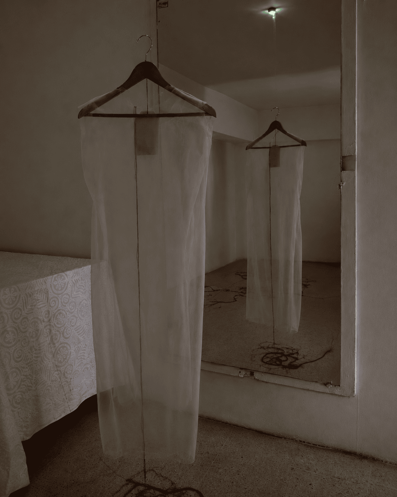
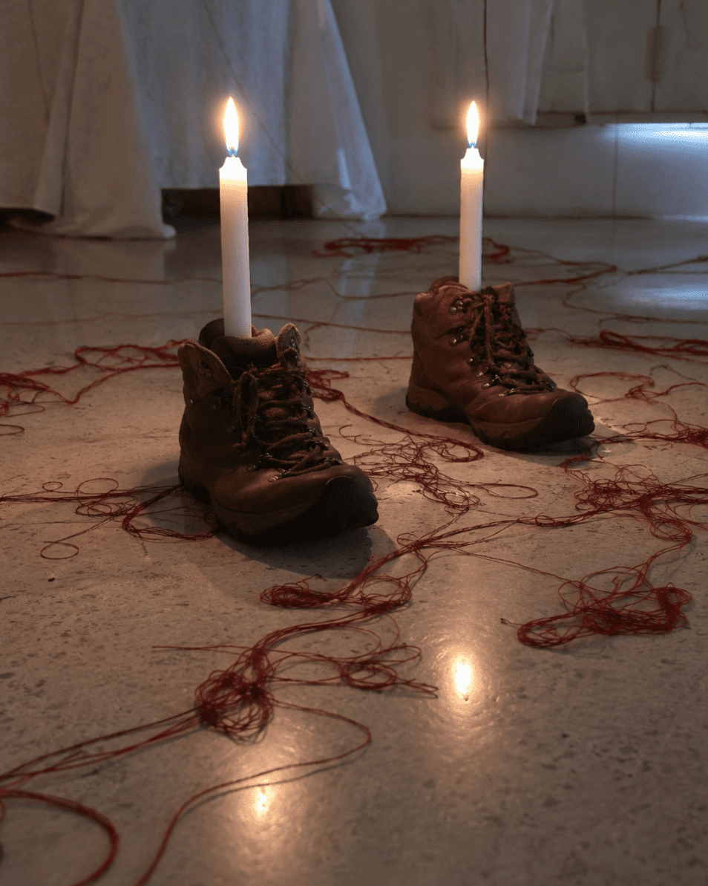
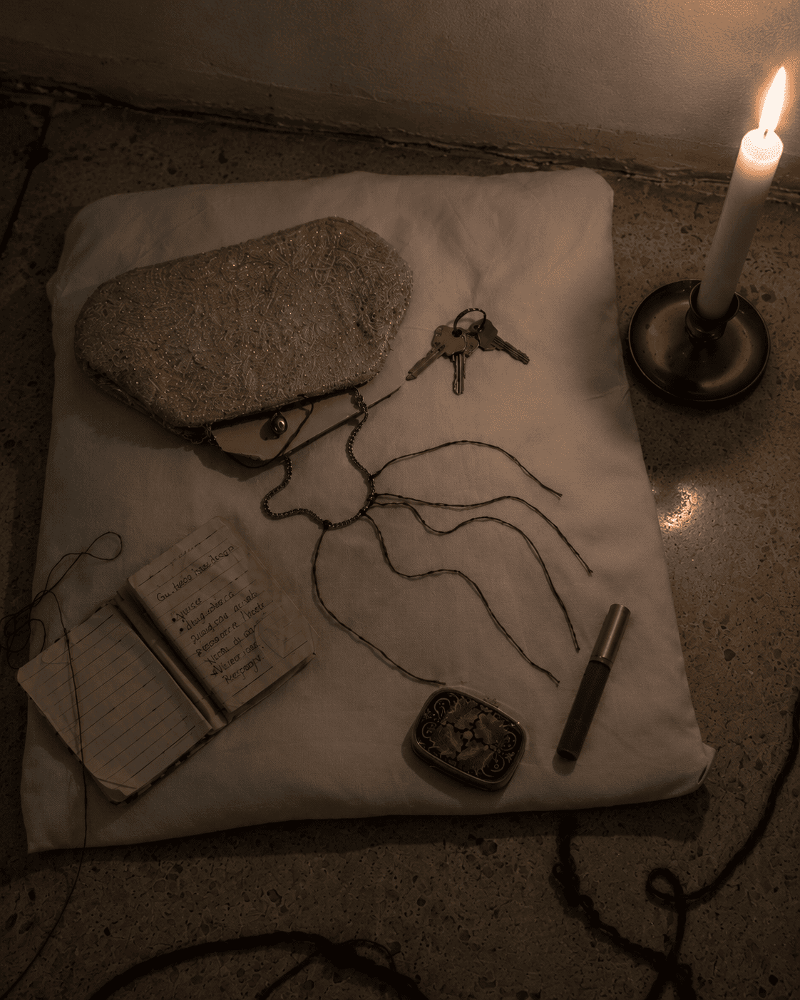
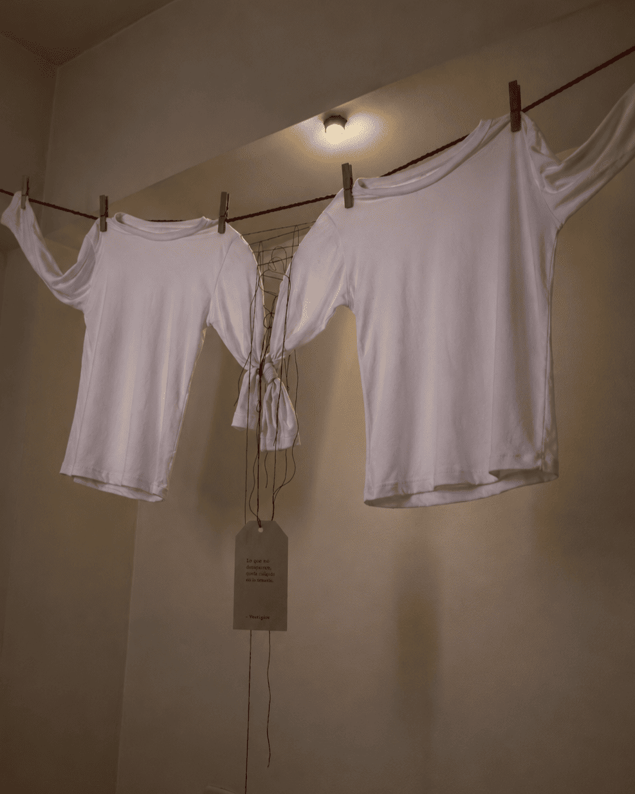
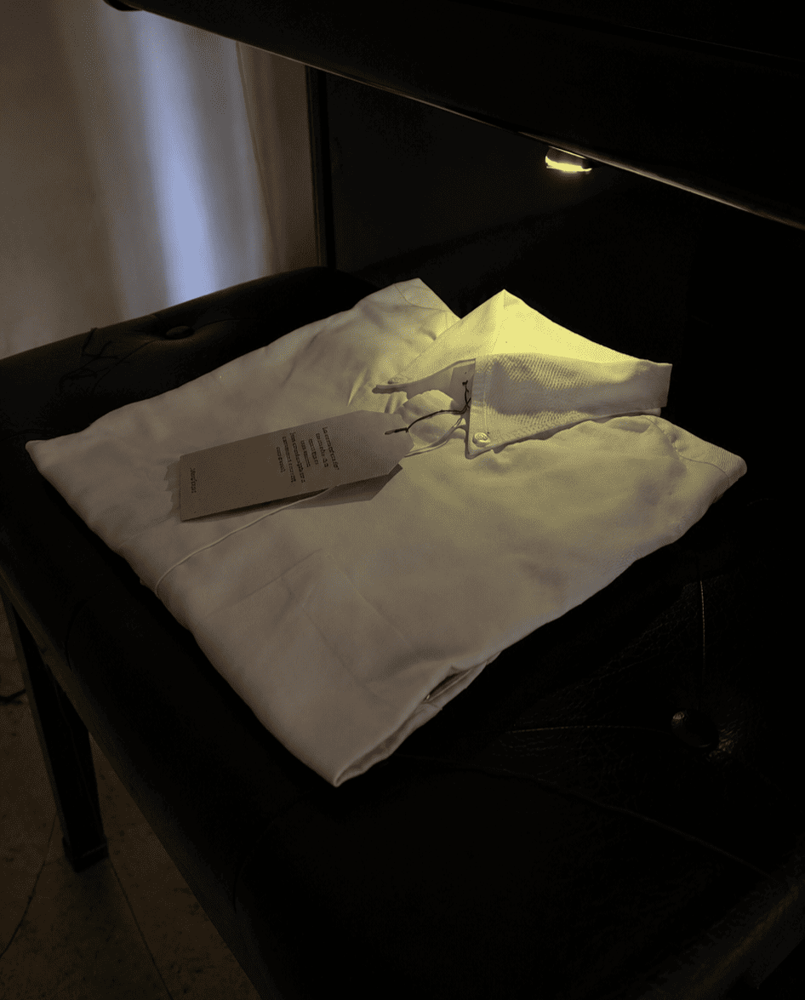
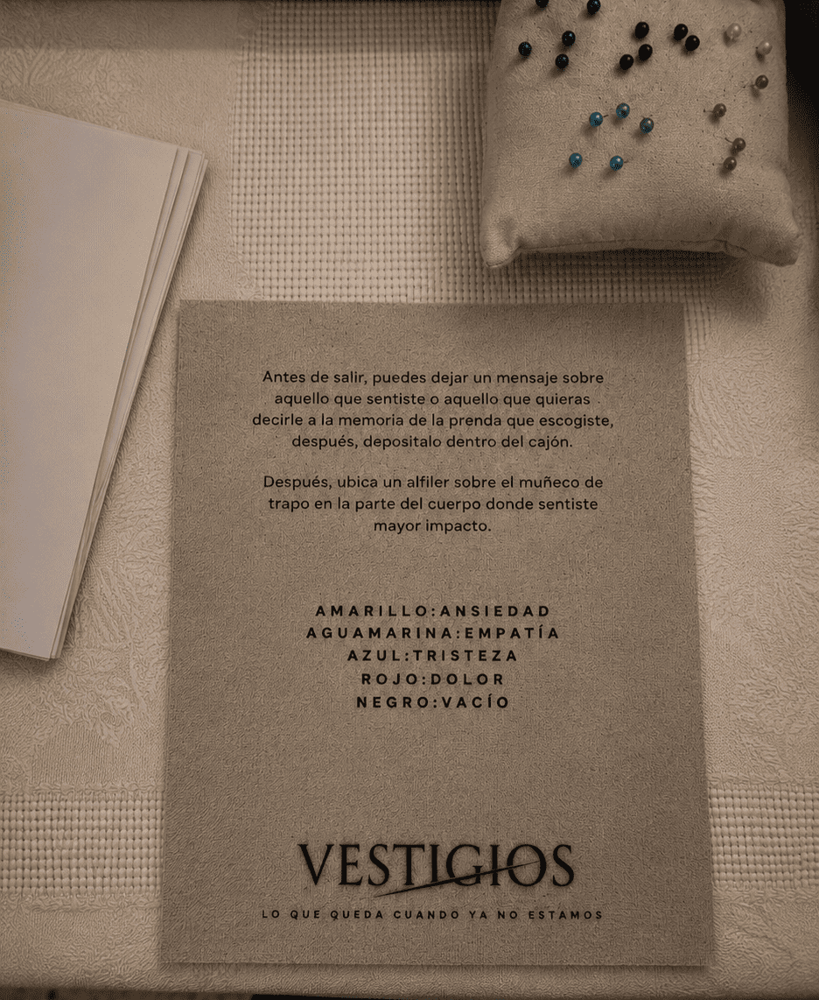
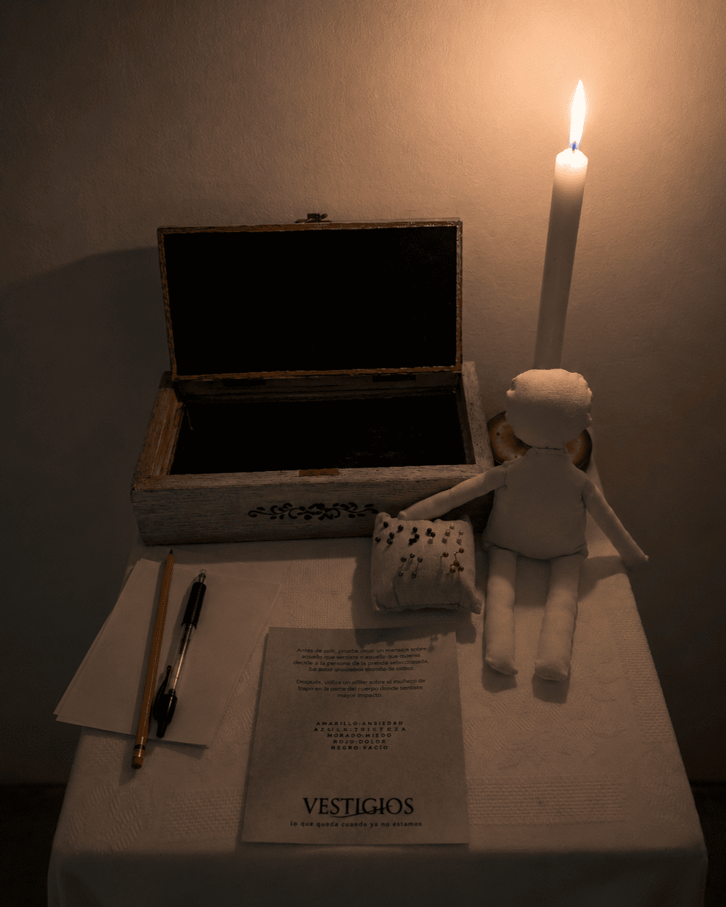

Experiencia — Instalación textil
Un espacio suspendido, una casa donde ya no hay nadie, pero donde cada prenda guarda una historia que no se cuenta completa, sino que se deja a la interpretación de quien la observa.
↓ Recorrer
Descripción general
Vestigios es un espacio suspendido que busca que el usuario conecte esos rastros con sus propios recuerdos, emociones y vivencias, construyendo un ejercicio de empatía, memoria y sensibilidad.
A través del textil, el espacio y la ausencia, Vestigios habla de distintos males que atraviesan el mundo: la violencia, el abuso de poder, la intolerancia y la crueldad humana.
Cada pieza funciona como un archivo detenido en el tiempo. Un vestigio.
¿Por qué textil?
La ropa es físicamente lo más cercano al cuerpo. Conserva marcas, desgaste y memoria material. En muchos casos, incluso, es testigo del final.
Por eso, las prendas no funcionan únicamente como objetos, sino como evidencia y presencia del cuerpo ausente. Cada intervención realizada sobre ellas busca materializar emocionalmente aquello que las historias no dicen completamente.
Narrativa y etiquetas
Cada pieza posee una narrativa independiente, pero todas se encuentran conectadas entre sí. Las historias aparecen como pequeños fragmentos dispuestos sobre etiquetas textiles ubicadas en el lugar donde normalmente iría una marquilla.
—
Estas etiquetas funcionan desde una doble interpretación: hacen referencia tanto a la etiqueta de una prenda nueva como a las etiquetas post mortem utilizadas para identificar cuerpos después de la muerte. Así, el texto se convierte también en una marca de memoria y ausencia.
—
El rojo se convierte en el hilo conductor literal y simbólico de toda la experiencia, representando la violencia, la herida y aquello que une todas las historias presentes en Vestigios.
Las cinco prendas
Cinco prendas intervenidas. Cinco males del mundo. Un recorrido que el usuario completa emocionalmente.

01 — Vestido
Suicidio / Baja autoestima
Ubicado frente al espejo, el vestido habla de la relación entre el cuerpo y la percepción de uno mismo. La transparencia del textil, las pequeñas heridas realizadas con hilos rojos y las deformaciones de la silueta representan vulnerabilidad, desgaste emocional y desaparición. El espejo funciona como confrontación directa entre el usuario y la ausencia.

02 — Zapatos
Asesinato
Los zapatos representan una vida interrumpida abruptamente. Su desgaste material y apariencia deteriorada permiten imaginar la vida difícil de la persona que los portó. En lugar de pies, dos velas rojas emergen desde su interior, dejando caer lentamente cera sobre el objeto como metáfora del tiempo consumiéndose y de la violencia apagando una vida.

03 — Bolso
Violación / Vulneración
El bolso aparece abierto y parcialmente expuesto. Desde él emergen objetos cotidianos como maquillaje, apuntes, una libreta y pequeños rastros de una vida común. La pieza habla de la vulneración de la intimidad y de aquello que fue tocado sin consentimiento. Los objetos no buscan dramatizar el hecho, sino humanizar la ausencia.

04 — Suéteres
Guerra / Injusticia colectiva
Los dos suéteres suspendidos representan vidas distintas atravesadas por una misma violencia. Ambas prendas permanecen cosidas entre sí por medio de sus mangas, obligadas a mantenerse unidas. Un hilo rojo atraviesa las piezas y dibuja pequeñas figuras humanas, construyendo una conexión silenciosa entre personas que jamás se conocieron pero terminaron alcanzadas por una misma crueldad.

05 — Camisa
El sistema / El poder / La causa
Ubicada sobre el piano, la camisa representa el origen conceptual de toda la experiencia: el poder, el control y las estructuras que permiten que todas las demás historias existan. La prenda permanece completamente doblada y cosida sobre sí misma por medio de hilos rojos que impiden desplegarla. Desde el piano comienzan a desprenderse hilos que se expanden por el espacio, funcionando como conexión visual y narrativa entre todas las piezas.
Intervención textil y paleta cromática
Blancos, cafés y rojos. Los tonos claros transmiten vacío y silencio; los materiales envejecidos evocan memoria y tiempo suspendido; el rojo funciona como marca de tensión y violencia.
El espacio y la ambientación
"La intención es que el espacio se sienta habitado por rastros y memorias, pero sin perder limpieza visual ni competir con las prendas."
La experiencia ocurre dentro de un espacio cerrado y contenido, construido como una casa suspendida en el tiempo. La ambientación se desarrolla a partir de elementos cotidianos utilizados de forma sutil: lámparas, objetos domésticos, materiales envejecidos y pequeñas fuentes de luz cálida que permiten construir una atmósfera íntima y melancólica sin saturar visualmente el espacio.
La iluminación es tenue y puntual, generando sombras y zonas de penumbra que obligan al usuario a acercarse y descubrir lentamente cada detalle.
Relación entre las piezas
Intervención y archivo emocional

Al finalizar el recorrido, el usuario encuentra un espacio de intervención acompañado por la pregunta: "¿Qué le quieres decir?". Allí puede escribir un mensaje dirigido a la prenda elegida, a la persona imaginada detrás de ella o incluso a sí mismo. Posteriormente, el mensaje es depositado dentro de un cajón, convirtiéndose en parte del archivo colectivo de la experiencia.

Junto a este espacio aparece un muñeco de trapo utilizado como mapa emocional. Por medio de alfileres de distintos colores, cada usuario puede marcar la emoción predominante que le dejó la experiencia y ubicarla sobre la parte del cuerpo donde sintió mayor impacto. Esta activación busca transformar emociones abstractas en marcas físicas visibles, convirtiendo al usuario no solo en espectador, sino también en participante y constructor del archivo emocional de Vestigios.
"¿Qué le quieres decir?"